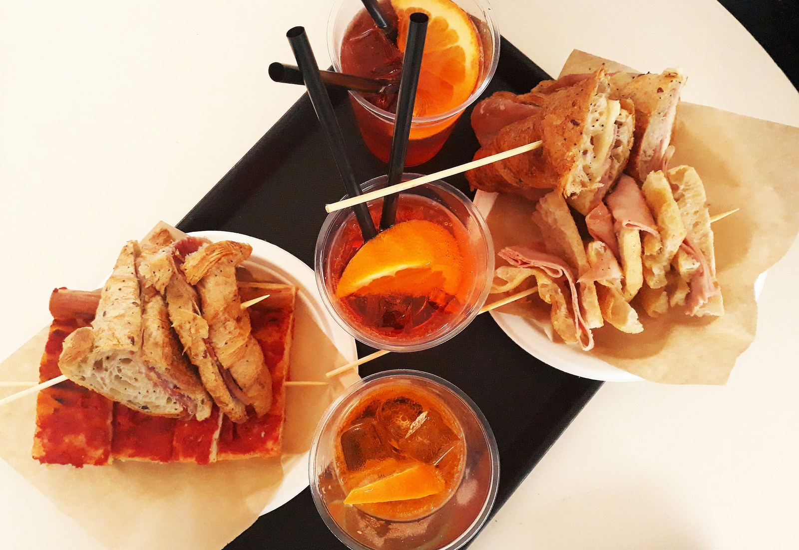

Learn about the differences between Italian aperitivo and apericena! Discover the traditions and culinary delights of these social gatherings. Whether you prefer a light aperitivo or a hearty apericena, find out which suits your taste best.
Scopri le differenze tra l'aperitivo e l'apericena italiani! Approfondisci le tradizioni e le delizie culinarie di questi momenti sociali. Che tu preferisca un aperitivo leggero o un ricco apericena, scopri quale si adatta meglio ai tuoi gusti.
Se ti sei ritrovato qui, probabilmente stai cercando di capire le differenze tra due momenti serali molto italiani: l'aperitivo e l'apericena. Continua a leggere questa mini guida per scoprire tutto sull'“happy hour”!
Cosa si intende per aperitivo?
L'aperitivo è una tradizione culinaria e sociale radicata in Italia, con origini antiche che risalgono all'epoca romana, dove si iniziava il pasto con piccoli assaggi di cibo accompagnati da vino. Nel tempo, questa pratica si è evoluta fino a diventare l'aperitivo moderno. Nel 1786, Antonio Benedetto Carpano ha dato vita al Vermouth, un aperitivo popolare ancora oggi.

L'aperitivo stimola l'appetito prima della cena e si compone di bevande alcoliche o analcoliche accompagnate da stuzzichini leggeri.
Cosa si intende per apericena?
L'apericena è una versione rinforzata dell'aperitivo che combina elementi dell'aperitivo tradizionale con quelli della cena. Si svolge generalmente tra le 19:00 e le 22:00 e offre un buffet ricco di antipasti, insalate, formaggi, affettati, pasta fredda, pizze, e altro ancora.
L'apericena può sostituire una cena completa grazie alla varietà e quantità delle pietanze offerte, e comprende una vasta scelta di bevande, da analcolici a vini bianchi frizzanti e cocktail alla frutta.
Organizza il tuo Apericena Home Made!
Se desideri un'esperienza più personale, organizza il tuo apericena a casa! Dai spazio alla tua creatività con bruschette, cupcake salati, panini assortiti e molto altro. L'allestimento della tavola è importante: pensa a tovaglie colorate e fiori freschi per un tocco speciale.

Concediti una serata di puro divertimento con amici e buon cibo, sia che tu scelga un aperitivo o un apericena!
fonte: Apericena o Aperitivo? Quali sono le differenze
Parole Chiave
| Aperitivo | Una bevanda consumata prima della cena, spesso accompagnata da snack leggeri. |
| Bevanda | Qualsiasi tipo di liquido che può essere consumato, come acqua, succo o tè. |
| Stuzzichini | Piccoli pezzi di cibo serviti come antipasto o accompagnamento a una bevanda. |
| Cena | Pasto principale della sera. |
| Apericena | Un pasto leggero consumato tra l'orario dell'aperitivo e quello della cena. |
| Buffet | Una selezione di cibi esposti su un tavolo da cui gli ospiti si servono liberamente. |
| Antipasti | Piccoli piatti serviti prima del pasto principale. |
| Insalate | Piatti composti principalmente da verdure miste, spesso condite con olio e aceto. |
| Formaggi | Prodotti latticini a pasta dura o morbida, spesso serviti come aperitivo. |
| Affettati | Carni tagliate a fette sottili, come prosciutto o salame. |
| Pasta fredda | Piatti di pasta preparati e serviti freddi. |
| Pizze | Piatti di pane coperti con pomodoro, formaggio e altri condimenti. |
| Panini assortiti | Piccoli panini farciti con ingredienti vari. |
| Sushi | Piatti giapponesi a base di riso e pesce crudo. |
| Analcolico | Bevanda che non contiene alcol. |
| Vino bianco frizzante | Vino chiaro con bollicine. |
| Cocktail alla frutta | Bevanda alcolica mista a base di frutta. |
Esercizio
Domande
- Cosa è l'aperitivo secondo il testo?
- Qual è l'orario tipico per consumare un aperitivo in Italia?
- Cosa si intende per apericena?
- Quali sono alcuni esempi di cibi che potresti trovare durante un apericena?
- Perché l'autore suggerisce di organizzare un apericena "home made"?